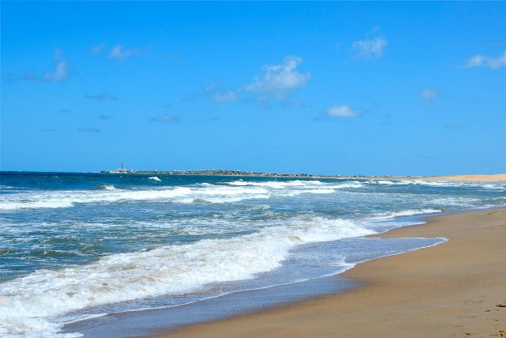
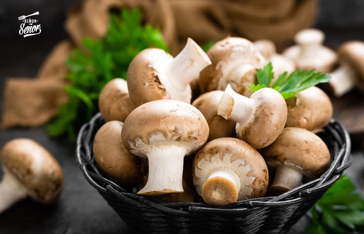
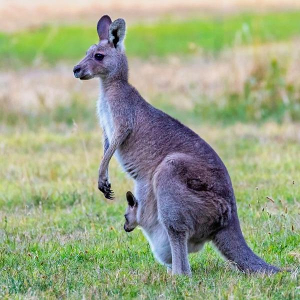
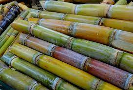

En esta pagina se encuentran las palabras mas comunes con la letra C
Cristiano Ronaldo dos Santos Aveiro, conocido como Cristiano Ronaldo, es un futbolista portugués. Juega como extremo izquierdo o delantero.
La costa es la zona extrema de un continente o de una isla que limita con el mar u otro cuerpo acuático de gran extensión.
El champiñón común, champiñón de París —cuyo nombre científico es Agaricus bisporus es una especie de hongo basidiomiceto de la familia Agaricales nativo de Europa y América del norte.
El término canguro es el nombre común que se utiliza para designar a las especies de mayor tamaño de la subfamilia Macropodinae, tal como el término ualabí que se utiliza para denominar a las de menor tamaño.
La caña o culmo es el tallo de las plantas de la familia de las gramíneas, de morfología generalmente cilíndrica, con entrenudos huecos y nudos macizos.
